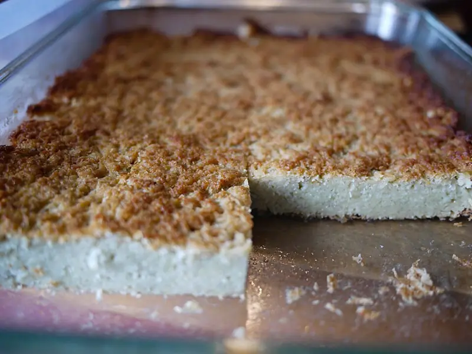

Фото: Rebecca Siegel, CC BY 2.0

Кугель картофельный
Запеканка из тёртого картофеля с луком и хрустящей корочкой
80 мин6 порц.290 ккал на порциюБ 7 · Ж 14 · У 34Еврейская кухня
Продукты на 6 порц.
- Картофель8 шт
- Лук репчатый2 шт
- Яйцо куриное3 шт
- Крахмал2 ст. л.
- Растительное масло4 ст. л.
- Соль1,5 ч. л.
- Перец чёрный молотый1 щеп.
Как готовить
- Разогрейте духовку до 200 °C (сильный жар). Смажьте форму 1 ст. л. масла и поставьте в духовку прогреваться.
- Картофель и лук очистите и натрите на мелкой тёрке. Отожмите лишний сок руками или через марлю.
- Добавьте яйца, крахмал, оставшееся масло, соль и перец, перемешайте.
- Выложите массу в горячую форму и разровняйте.
- Запекайте 55-60 минут до тёмно-золотой хрустящей корочки. Нож в центре должен входить легко.
- Дайте постоять 10 минут и нарежьте квадратами.
Совет. Чтобы картофель не потемнел, трите лук и картошку по очереди. Крахмал вместо муки делает кугель пригодным для Песаха.